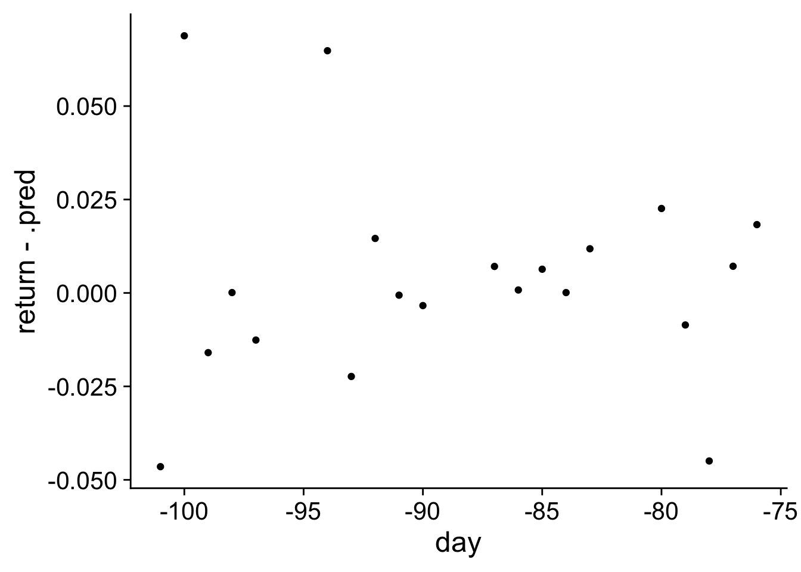

In this section, I will show how you can code a prediction model for the return of a company’s stock price based on the returns of a number of peer companies. I loosely follow the same approach as in Baker and Gelbach (2020). In that paper, peer firms are identified based on the SIC code in the Compustat data which indicates what the industry is of the firm’s primary product.
We are using the tidymodel package for the application and I will follow the introduction to tidymodels. The advantage of the tidymodels approach is that you can follow a very similar workflow for other machine learning methods than the one I will be showing here.
Setup
library(tidyverse)
── Attaching core tidyverse packages ──────────────────────── tidyverse 2.0.0 ──
✔ dplyr 1.1.2 ✔ readr 2.1.4
✔ forcats 1.0.0 ✔ stringr 1.5.0
✔ ggplot2 3.4.2 ✔ tibble 3.2.1
✔ lubridate 1.9.2 ✔ tidyr 1.3.0
✔ purrr 1.0.1
── Conflicts ────────────────────────────────────────── tidyverse_conflicts() ──
✖ dplyr::filter() masks stats::filter()
✖ dplyr::lag() masks stats::lag()
ℹ Use the conflicted package (<http://conflicted.r-lib.org/>) to force all conflicts to become errors
Maybe surprisingly 1 one of the biggest issue is to construct the data in a way that we can use them efficiently. There are two issues that we will have to deal with: (1) who are the peer firms and (2) how to handle the fact that not every firm has the same amount of peers. I start with the first problem here.
I am using a package dbplyr which allows us to access the WRDS databases with the tidyverse functions, without any need for SQL code. As before, we need to establish a connection with WRDS first.
I will roughly follow the approach in Baker and Gelbach (2020) and use the SIC industry classification codes. We require at least 5 peer firms within the same 4 digit SIC category or if necessary within the same 3 digit category.
The first part of the code below downloads the SIC data from WRDS if the dbplyr data is loaded. For that you need to know in which part of WRDS the data is stored. See the documentation for the SIC codes. We can then use tidyverse functions to specify the query after which the collect function will actually run the query on the servers of WRDS.
The next part of the code summarises the industry SIC codes so that each 4 digit or 3 digit industry has enough peers for our purpose. The last part than sets the appropriate SIC code each company so that we can match them to firms in the same industry (with the same SIC) later.
In the next step, I create a function that will get the returns for a firm based on their permno (permno_y) and the permnos of all firms in the same industry as the firm from earliest (300) to latest (75) days before the announcement day. The pivot_wider code takes the long column of all returns and makes it into a wide format with one column for each firm. The last step in the function changes the name of the column with the return of the focal firm to return. This will make it easier to later specify the dependent variable.
returns <-select(all_stocks, date, ret, permno)anndat <-ymd("2005-03-28")permno <-10560permnos <-head(linking_table$permno)get_returns <-function(anndat, permno_y, permnos){ begin <- anndat - earliest end <- anndat - last data <- returns %>%filter(permno %in% permnos, date >= begin, date <= end) %>%filter(!is.na(ret)) %>%pivot_wider(values_from = ret, id_cols = date, names_from = permno) %>%mutate(day = date - anndat) %>%select(-date) %>%arrange(day) vars <-names(data)names(data) <-if_else(vars ==as.character(permno_y),"return", vars)return(data)}get_returns(anndat, permnos[3], permnos)
# A tibble: 157 × 3
`50906` return day
<dbl> <dbl> <drtn>
1 0.00787 0.0438 -300 days
2 0.00391 -0.0230 -299 days
3 -0.0272 -0.0164 -298 days
4 0.0120 -0.00104 -297 days
5 0.0277 0.0625 -294 days
6 0.0385 0.00588 -293 days
7 -0.0185 -0.0175 -292 days
8 0.00377 0.0218 -291 days
9 -0.0414 -0.0311 -287 days
10 0.0157 0.00501 -286 days
# ℹ 147 more rows
Unit: milliseconds
expr min lq mean median
get_returns(anndat, permnos[3], permnos) 143.3846 200.6644 202.173 204.4687
uq max neval
227.5258 248.3264 10
Combining it all
In the next step, we will collect the peers data for N_announce (1000) earnings announcements. I use the furrr package which allows us to run some of the computations in parallel with the future_pmap function which is the parallel version of pmap. If you have a computer with multiple cores this will drastically speed up the computations in this code block.
Most of the initial steps are just joining the earnings announcement data, with the SIC data, and the linking table with some cleaning steps for missing data in between. We add the SIC codes twice. The first time we add the SIC code that for each firm based on the gvkey. The second time we add each gvkey as a gvkey_peer when they are in the same SIC code. Next, we use the linking_table to add the permno_peer. Finally, we summarise the table so that all the peers are in one list for each earnings announcement. This than enables us to get the returns of the peers in the mutate step after we made sure that there are enough peers available. The final data has a data column with all the return data for the focal company and it’s peers. This is how we deal with the issue that there might be a different number of peers for difference firms. We have one row for each firm with a variable data that contains all the return data necessary for the prediction for each announcement.
In this section, we will pick some data to illustrate the different steps in typical machine learning prediction task. The goal we have is to predict the returns of a firm based on the returns of other firms. Specifically, we will will use data from 300 to 95 days before an earnings announcement to predict the returns in day 94 to day 75 before the earnings announcement. This is not necessarily a useful exercise but it let’s us introduce the practical implementation of some of the theoretical concepts in the theory section.
Get Some Data
We are going to use some example data from one earnings announcement and we are going to use data from an earnings announcement where the firm has a lot of peers because in that situation prediction is more likely to suffer from overfitting. The data_ml data excludes all peers with missing observations because most of the algorithms do not deal well with missing values. There are more sophisticated approaches possible to deal with missing data but they are not necessary to illustrate the main workflow.
We first going to run a traditional linear model within the tidymodels framework. The approach is overkill for just running a linear model but it will help us to build up the full workflow. In the code, I first split the data in a proportion \(\frac{N - 20}{N}\) of training data and a proportion $ frac{20}{N}$ of test data, where \(N\) is the number of days of data available. As a result, we will use the training data to determine the parameters and than use that model to predict the last 20 days as test data. Next, we set which type of model we want to use, a linear model. We than fit the model where we specify the return variable as the outcome variable and we use the dot . to indicate that we want to use all the other variables as predictors. Finally, the tidy function gives the estimates and statistics for the estimates in a format that works with the tidyverse.
N <-nrow(data_ml)data_split <-initial_time_split(data_ml, prop = (N -20)/N)train <-training(data_split)test <-testing(data_split)lm_mod <-linear_reg()lm_fit <- lm_mod %>%fit(return ~ ., data = train)tidy(lm_fit)
# A tibble: 193 × 5
term estimate std.error statistic p.value
<chr> <dbl> <dbl> <dbl> <dbl>
1 (Intercept) -0.00257 NaN NaN NaN
2 `10002` 2.23 NaN NaN NaN
3 `10304` -21.6 NaN NaN NaN
4 `10562` -5.43 NaN NaN NaN
5 `10563` -2.23 NaN NaN NaN
6 `10588` -5.37 NaN NaN NaN
7 `10623` 1.66 NaN NaN NaN
8 `10725` 5.77 NaN NaN NaN
9 `10825` -5.44 NaN NaN NaN
10 `10906` 9.65 NaN NaN NaN
# ℹ 183 more rows
You can immediately see that the model does not report any standard errors or p-values. This happens because we have more predictors than we have trading days and thus we can perfectly fit the in-sample returns. This type of data is exactly why would want to use a regularised regression approach.
Before we do that, we need to fix another issue. In the previous code, we used the day variable as a predictor which was not what we intended. You can see that we can get an estimate for day in the code below. Also notice the advantage of using tidy representation of the estimated coefficients is that we can use filter to focus on some terms. To solve the issue with the day variable, we will use a recipe to set the formula and do some data cleaning. Specifically, we will specify that the day variable is an ID variable which means that it should not be used for prediction but we want to keep it in the data for investigating the fit later.
tidy(lm_fit) %>%filter(term =="day")
# A tibble: 1 × 5
term estimate std.error statistic p.value
<chr> <dbl> <dbl> <dbl> <dbl>
1 day NA NA NA NA
lm_recipe <-recipe(return ~ ., data = train) %>%update_role(day, new_role ="ID")summary(lm_recipe)
# A tibble: 193 × 4
variable type role source
<chr> <list> <chr> <chr>
1 10002 <chr [2]> predictor original
2 10304 <chr [2]> predictor original
3 10562 <chr [2]> predictor original
4 10563 <chr [2]> predictor original
5 10588 <chr [2]> predictor original
6 10623 <chr [2]> predictor original
7 10725 <chr [2]> predictor original
8 10825 <chr [2]> predictor original
9 10906 <chr [2]> predictor original
10 10913 <chr [2]> predictor original
# ℹ 183 more rows
Let’s put everything together in a workflow, fit the workflow and make predictions for the test data.
The predictions give us 20 predictions for the days. We can also calculate the RMSE for the training data (in-sample fit) and the test data (out-of-sample fit).
augment(lm_fit, train) %>%rmse(return, .pred)
Warning in predict.lm(object = object$fit, newdata = new_data, type =
"response"): prediction from a rank-deficient fit may be misleading
# A tibble: 1 × 3
.metric .estimator .estimate
<chr> <chr> <dbl>
1 rmse standard 7.48e-16
augment(lm_fit, test) %>%rmse(return, .pred)
Warning in predict.lm(object = object$fit, newdata = new_data, type =
"response"): prediction from a rank-deficient fit may be misleading
# A tibble: 1 × 3
.metric .estimator .estimate
<chr> <chr> <dbl>
1 rmse standard 1.47
While the RMSE is almost 0 within the sample, it’s 1.47 out-of-sample. That is there is a large difference between the prediction error within the training data and the prediction error in the test data. This is the reason why we want to use a regularised regression to do out-of-sample predictions 2
Elastic Net
In this section, we are going to run the regularised regression as described in the theory. We will center and scale the data so that all returns have a mean of 0 and a standard deviation of 1. Remember that the penalty term punishes coefficients that are higher, however the size of the coefficient also depends on the variation in the variable. To put all the coefficients on equal footing, we scale them first.
We will set the penalty \(\lambda = .4\) and the mixture proportion \(\alpha = 0.5\) in the elastic net. We will need to install the glmnet package because that is the engine we use in our linear regression model. As before, we can put the updated data cleaning and the linear model in a new workflow and fit the model. Finally, we report the in-sample and out-of-sample RMSE.
# A tibble: 1 × 3
.metric .estimator .estimate
<chr> <chr> <dbl>
1 rmse standard 0.0241
augment(net_fit, test) %>%rmse(return, .pred)
# A tibble: 1 × 3
.metric .estimator .estimate
<chr> <chr> <dbl>
1 rmse standard 0.0278
In contrast to the ordinary linear model, we see that the regularised model has a similar prediction error in-sample and out-of-sample. Furthermore, the out-of-sample prediction is much better with the regularised regression.
Tuning Elastic Net
The problem with the previous analysis is that we had to set the penalty and mixture values. We can do better and test multiple values and see which ones give us the best prediction. This process is called tuning of the hyper parameters and it is a standard procedure in many machine learning applications.
The above code shows the general principle. We are dividing the training data in 10 randomly selected folds. We use the same workflow as above but we use the part of the training data that is not in a fold to predict the data in the fold. Now, we have 10 out-of-sample RMSEs. With collect_metrics, we get an overview of the mean RMSE and the standard error around the mean.
folds <-vfold_cv(train, v =10)net_fit_rf <- net_workflow %>%fit_resamples(folds, metrics =metric_set(rmse))collect_metrics(net_fit_rf)
# A tibble: 1 × 6
.metric .estimator mean n std_err .config
<chr> <chr> <dbl> <int> <dbl> <chr>
1 rmse standard 0.0235 10 0.00186 Preprocessor1_Model1
While the randomly selected folds is often appropriate, in our case it is not. We have a time series and we want to predict future returns based on earlier returns. So, we are going to use a different function to create rolling windows of 75 days of data to build the model to predict the next 5 days. So for instance, we use a day 1-75 to predict day 76-80. Next, we use day 6-80 to predict day 81-85. We repeat the procedure until we run out of data. When we print windows, you can see that we have 10 splits with 75 modeling observations and 5 observations that we want to predict.
windows =rolling_origin(train, initial =75, assess =5,skip =5, cumulative =FALSE)print(windows)
# A tibble: 1 × 6
.metric .estimator mean n std_err .config
<chr> <chr> <dbl> <int> <dbl> <chr>
1 rmse standard 0.0165 10 0.00352 Preprocessor1_Model1
Again, we find that the regularised version gives better out-of-sample predictions than the non-regularised version. In the next step, we will use different values for the penalty and the mixture. With the same procedure as before, we can estimate the mean out-of-sample RMSE for each combination of the penalty and mixture and then decide to use the combination that leads to the best predictions. This process is also called cross validation.
First, we specify that we want a linear model with two hyper-parameters, the penalty and the mixture, that need to be tuned during the cross validation process. I specify 6 possible values for the penalty and 11 for the mixture. Next we specify the workflow and then fit the model over the grid of all 66 possible values of the penalty and the mixture.
Next, we collect the RMSE measures for the out-of-sample predictions for each combination of penalty and mixture. We see that a lot of models with some regularisation give the best out-of-sample predictions. In a more realistic, complicated example, I would expect there to be one combination that is the best.
collect_metrics(net_tune) %>%arrange(mean)
# A tibble: 66 × 8
penalty mixture .metric .estimator mean n std_err .config
<dbl> <dbl> <chr> <chr> <dbl> <int> <dbl> <chr>
1 0.2 0.1 rmse standard 0.0165 10 0.00352 Preprocessor1_Model09
2 0.3 0.1 rmse standard 0.0165 10 0.00352 Preprocessor1_Model10
3 0.4 0.1 rmse standard 0.0165 10 0.00352 Preprocessor1_Model11
4 0.5 0.1 rmse standard 0.0165 10 0.00352 Preprocessor1_Model12
5 0.1 0.2 rmse standard 0.0165 10 0.00352 Preprocessor1_Model14
6 0.2 0.2 rmse standard 0.0165 10 0.00352 Preprocessor1_Model15
7 0.3 0.2 rmse standard 0.0165 10 0.00352 Preprocessor1_Model16
8 0.4 0.2 rmse standard 0.0165 10 0.00352 Preprocessor1_Model17
9 0.5 0.2 rmse standard 0.0165 10 0.00352 Preprocessor1_Model18
10 0.1 0.3 rmse standard 0.0165 10 0.00352 Preprocessor1_Model20
# ℹ 56 more rows
Next, we select the best combination of penalty and mixture and use the final model on all the training data. We can then evaluate the prediction quality based on the RMSE metric.
# A tibble: 1 × 4
.metric .estimator .estimate .config
<chr> <chr> <dbl> <chr>
1 rmse standard 0.0278 Preprocessor1_Model1
Finally, we can calculate the predictions for the test set which we split off at the beginning and add the day column from the test set. We can than graph the deviations between the actual return and the predicted return for the 25 days in the test data.
library(cowplot)
Attaching package: 'cowplot'
The following object is masked from 'package:lubridate':
stamp
Don't know how to automatically pick scale for object of type <difftime>.
Defaulting to continuous.

I can see no clear patterns in the deviations between the actual return and the predicted values.
Function
Finally, we can build a full workflow to run the regularised regression for each earnings announcement. I will not actually run it for every earnings announcement because that would take too much computation for an example. The code in this section is just to illustrate how the machine learning model could be used to improve on the Dellavigna and Pollet (2009) paper.
The data
I rewrote the function to get the returns necessary for the machine learning model. The biggest difficulty is to make sure that we have the correct dates because the training data and the test data are not an uninterrupted time series. So, the extra parameters are mainly to deal with the end and start day relative to the earnings date. At the end of the data cleaning pipe, I also delete all the columns with missing data. Because, we have need to run the data for a lot of earnings announcements, we might end up with some less than ideal cases with missing data, insufficient variables, or missing returns for the firm that we are interested in. There are more elegant solutions to avoid getting errors for these issues but I will just try to avoid them or try to make sure that the code keeps running even when an error occurs for one of the earnings announcements.
I left some of my test code at the end of the code chunk. It’s a good idea to have these quick tests when you write more extensive functions. Over time, you might need to update the functions and you want to make sure that they still work on examples that worked before.
get_returns_event <-function(anndat, permno_y, permnos,before_start =300, before_end =25,after_start =0, after_end =75 ){ before_begin <- anndat - before_start before_last <- anndat - before_end after_begin <- anndat + after_start after_last <- anndat + after_end data <- returns %>%# all dates within the rangefilter(permno %in% permnos, date >= before_begin, date <= after_last) %>%# exclude the dates after training and before eventfilter(date < before_last | date >= after_begin) %>%filter(!is.na(ret)) %>%pivot_wider(values_from = ret, id_cols = date, names_from = permno) %>%mutate(day = date - anndat) %>%select(-date) %>%arrange(day) %>%select_if(~!any(is.na(.))) vars <-names(data)names(data) <-if_else(vars ==as.character(permno_y),"return", vars)return(data)}get_returns_event(anndat, permnos[3], permnos) %>%arrange(-day)
# A tibble: 244 × 3
`50906` return day
<dbl> <dbl> <drtn>
1 0.0194 -0.0184 74 days
2 0.0665 0.0155 73 days
3 0.0380 0.00323 72 days
4 0.0262 -0.0178 71 days
5 0.00620 -0.00316 70 days
6 0.0179 -0.00629 67 days
7 0.0485 0.0108 66 days
8 -0.00110 -0.0193 65 days
9 0.0231 0.0926 64 days
10 0.0114 -0.00339 60 days
# ℹ 234 more rows
The next functions runs the full elastic net workflow with cross validation for the hyper parameters. As you can see in the test code at the end, you can just use the function above to get data and then pass it on to the function to run the full elastic net. I make sure that the training data is from before the event day and the test data is from after the event day. For the rolling prediction windows in the cross validation step I choose 100 observations to predict the next 15 days which will result in 5 windows in the typical situation. I also limit the number of hyper parameters to test, just to limit the computations. The remainder of the code is very similar to the code in the previous section for the single prediction task.
run_elastic_net <-function(data, event_day =0){# split the data on day 0 n_total <-nrow(data) n_before <-nrow(filter(data, day < event_day)) prop <- n_before/n_total data_split <-initial_time_split(data, prop = prop) train <-training(data_split) test <-testing(data_split)# prepare data and windows net_recipe <-recipe(return ~ ., data = train) %>%update_role(day, new_role ="ID") %>%step_center(all_predictors()) %>%step_scale(all_predictors()) folds <-rolling_origin(train, initial =100, assess =15,skip =15, cumulative =FALSE)# set up the hyper parameters net_tune_spec <-linear_reg(penalty =tune(),mixture =tune() ) %>%set_engine("glmnet") grid_hyper <-expand.grid(penalty =c(0, 0.2, 0.4, 0.6, 0.8, 1),mixture =seq(0, 1, length.out =6))# run model net_tune_wf <-workflow() %>%add_model(net_tune_spec) %>%add_recipe(net_recipe) net_tune <- net_tune_wf %>%tune_grid(resamples = folds,grid = grid_hyper,metrics =metric_set(rmse))# Get best model best_model <-select_best(net_tune, "rmse") final_wf <- net_tune_wf %>%finalize_workflow(best_model) final_fit <- final_wf %>%last_fit(data_split, metric_set(rmse))return(final_fit)}test <-get_returns_event(anndat = peers$anndat[1],permno_y = peers$permno[1],permnos = peers$permnos[[1]]) %>%run_elastic_net(event_day =0)
Warning: The `...` are not used in this function but one or more objects were
passed: ''
Finally, we can combine the two functions above in one function and calculate the abnormal returns as the difference between the prediction from the elastic net and actual return. The cumulative return is the the sum of those abnormal returns. Notice that the bulk of the function is wrapped in the tryCatch function. This is an R function that let’s you control what happens if an error occurs in the code it wraps. I use the function to return NA in the case that any of the functions gives an error.
Warning: The `...` are not used in this function but one or more objects were
passed: ''
# A tibble: 2 × 2
window car
<chr> <dbl>
1 short -0.00746
2 long -0.0150
In the last code block, we run the functions for N_announce earnings announcements. The code is very similar to the original abnormal return code. We first construct the data in a way that allows us to use the functions we just created. The last mutate step then runs the function in parallel depending on how many cores that are available in our computer. The reason I chose to only save the CARs is that in this way the function in future_map does not have to pass on huge amount of data as input or output which generally improves performance.
Baker, Andrew, and Jonah B. Gelbach. 2020. “Machine Learning and Predicted Returns for Event Studies in Securities Litigation.”Journal of Law, Finance, and Accounting 5 (2): 231–72. https://doi.org/10.1561/108.00000047.
Dellavigna, Stefano, and Joshua M. Pollet. 2009. “Investor Inattention and Friday Earnings Announcements.”The Journal of Finance 64 (2): 709–49. https://doi.org/10.1111/j.1540-6261.2009.01447.x.
Footnotes
Or maybe it should not be that surprising anymore at this point.↩︎
Also notice the warning message. The rank-deficient fit is a consequence of having more predictors than observation days. Again, it reflects the difficulty of using an ordinary linear regression.↩︎